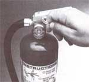
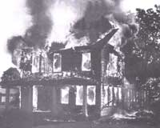
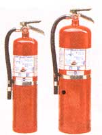

COUNTRY SKILLS
Protect your family and home with simple fire-prevention tips.
Merely owning a fire extinguisher isn't enough;
you need to practice using it. ->>
Greybump, our young tomcat, gave the first alert. My then-wife, Debra, was up late reading while a load of laundry finished. "Bump" began darting about the room, jumping on the furniture, and muttering to himself as kittens will. But when he began throwing himself at Debra's legs and yowling, she took notice. She assumed he was having a "cat spazz" (as the kids call it) and brushed him off: He became louder and more persistent till she finally got up to let him out. But he refused to leave the house and kept yowling and running toward the back of the house.
Debra followed him. She noticed a peculiar odor in the laundry room and began to worry that she had overloaded the washing machine. When the washer began to groan and the lights in the kitchen began to flicker and dim, she woke me up. Groggy, I came downstairs and we tried to identify the problem-the odor in the laundry room smelled like an overtaxed rubber drive belt to me. Was the problem in the house, on the pole, or perhaps an outage up line? I realized I first had to check the main electrical panel in the cellar, just under the laundry room. When I opened the door, a cloud of gray smoke rolled up the steps and into the kitchen.
FIRE! Fighting panic, Debra and I ran upstairs as the house lights went out. As she roused four sleepy youngsters into a hand-in-hand fire-drill formation and led them to the front hall, I grabbed the large electric lantern I keep beside the bed. Still groggy, I couldn't locate our extinguisher. Debra handed me the little halogen fire extinguisher we keep beside the wood stove and I ran back to the cellar.
The smoke-so thick that the lantern beam carried only a few inches-had the unmistakable acrid odor of an electrical short. I groped my way along the cellar posts supporting the old chestnut beams to the main electric panel against the east cellar wall. Smoke was billowing from the top of the panel, but through it I could see bright sparks. I not only heard the snap of an arcing electrical short circuit, but also the crackle of a wood fire. Filled with fear and resolve I yelled: "Get 'em out; we have a fire," and sent my family out into the New England chill.
I groped my way back upstairs and tried the telephone ...dead. I ran to the front door. The kids, huddling under a maple, said Debra was on her way to the neighbors to call our volunteer fire department. I rushed back into the smoke. The arcing crackle was louder, the sparks brighter, and the smoke thicker. To be ready for a potential fire caused by our wood stove, I'd practiced with the extinguisher.
Although my lungs burned and my eyes were streaming from the smoke, I was able to snap the tab, depress the handle, and aim the powder stream into the heart of the fire. The flames and smoke diminished but the arcing didn't stop.
With the flashlight held up close, I discovered the arcing was coming from a tat cable. I groped along the cable till the insulation was cool enough to grasp. Then I hung from it and bounced with my full weight till it came free from the metal of the main fuse box. With the arcing gone, I turned to the wood fire extending from the plank support behind the fuse box and through a hole burned through the subflooring far up into the wall.
After this point, my memory is dim. All I knew was that my family was safely out and that I had to keep the fire under control till the volunteer fire fighters showed up. I somehow had to get water into the burning wall.
Though I was becoming woozy from the smoke, I realized with peculiar clarity that the big old water tank was full and pressurized. I failed to think of the garden hose coiled in a basement corner just a few feet from the fire. Instead I started running up and down the cellar stairs with a salad bowl filled with water from the kitchen sink. I'd throw the water into the burning wall cavity and run back to the kitchen. I don't recall how many trips I made, but suddenly our neighbor, Ed, was beside me with the big extinguisher he keeps by his fireplace. The chemical cloud (even more lung searing than the smoke from burning electric cable) drove us out of the cellar.
We stumbled out the front door just as the cars and pickup trucks of the "first responders" drove up, and oilskin-clothed fire fighters ran up with big extinguishers in hand. I guided them to the side of the house, tore open the cellar bulkhead door (still nailed shut for winter), and showed them the fire site. Then I went looking for Debra and the kids and found Debra lying on the ground exhausted and only semi-conscious from her desperate run, but with EMTs working over her.
After that my memory is even dimmer. We got into the ambulance. Ed and Marion and other caring neighbors divided up the kids. Then, Debbie, Dawn, and their EMT squad drove Debra and me to the emergency room for treatment-including a nastily burned hand that I didn't even feel till they began bandaging it.
Fortunately we were all safe, together, and back home the next afternoon. Over the following week, neighbors offered more help than we could begin to use. Food, clothing, and even household furnishings appeared at the front door. A borrowed gasoline electric generator powered the water pump and refrigerator, and we kept warm with donated wood while we cleaned out fire-damaged rooms. Volunteers used freely given building materials to patch holes in the inside and outer house walls that the fire fighters had to chop out to get at hidden hot spots.
The electrical and telephone entry panels and much of the cellar wiring needed replacing-but we had electricity within a week thanks to Ellie and her fire relief association. They had provided us with emergency funds, as did the town fire officials and building-contractor neighbors who convinced an electrical contractor and local building inspector to provide emergency service. (I sincerely hope you never need the tip, but most building codes have a provision exempting an older home from a full-house inspection if a partial rewiring or replumbing or rebuilding is required after a fire; otherwise, if you replace the main electric panel, pipes, or structural timbers, your whole house must be "brought up to code," which can be extremely costly.)
Damage was slight considering that the house is a wood-frame antique and a potential tinderbox. Debra and the kids suffered no lasting physical effects; my hand healed quickly, but six months later, after taking in all that smoke, I still tire and cough easily. The psychological effects are more subtle but not severe and will pass. To this day I have recurring fire dreams.
But we are fortunate to be alive. Our fire chief, Greg, said that char thickness in the wall indicated that the fire had been going for at least a half hour before we knew it. If Debra hadn't chanced to be awake, if the kitten hadn't been in the house-there are a lot of "ifs:" As Greg put it: "It's a good thing you held the fire in check. Yours is the first house we've been able to save this year." This is because country distances can be great, and volunteers are at home or work when the call goes out. Often, a country fire is beyond control by the time fire fighters arrive-unless home owners can prevent the fire from spreading early.
Debra and I don't pretend to be heroes. That honor is reserved for the cat that alerted us. We had done some things right and some wrong; I'd like to share with you what we learned about being prepared for country fires. You can do a great deal to ensure that luck is on your side.
Your first question will be: "But didn't you have one of those little electronic fire alarms?" Yes, we did-it was placed in the hall under the stairs, on a wall beside the cellar door and stairwell. It was less than two years old with a fresh battery. I habitually pushed the little button to test it once a week. When we checked the alarm after the fire, the button did sound the alarm; but when I ran a smoking match under it, the darned thing failed to go off. Moral: Test an alarm by exposing it to smoke.
Also, install more than one alarm-at least one on each floor and/or each distinct living area, including the cellar (where your furnace and electric panel is located) and the attic (where lightning--caused fires might start). Locate one on top of each stairwell leading to sleeping areas. If I'd put an alarm in the basement (one of those things I never got around to), the fire would never have gotten as far as it did. Be sure to test frequently with a smoking stick and to replace batteries annually.
Next, plan and practice home fire drills during both day and night. Children should be taught to hold hands and follow orders even while half awake. Your lights may be out, so keep a strong flashlight beside your bed. It's also a good idea to install power-failure night lights in electric outlets along your escape routes. Radio Shack No. 61-2772 sells for less than $15. As stairs may be afire, identify at least two escape routes from upper floors.
Lacking back stairs, invest in an escape ladder or two. Be sure that all ground-floor windows open easily; otherwise, train the family how to break glass and get out quickly. Contact your fire department for "tot-savers," the reflective placards affixed to the inside of kids' rooms so fire fighters can locate them quickly at night. However, it is essential to remove the stickers if and when you move. If you don't, you may he putting fire fighters' lives in great danger.
SAFETY TIP: Loose sawdust that is floating around can ignite and explode. Keep your wood shop clean and dust-free. Never light any type of flame there.
Getting people out of a burning home is the first order of business. Train your people to move quickly out of the house and to never go back in. Let the firemen do their job or let the place burn. A house can be replaced; you can't. As I discovered, you violate this rule at your peril even if the fire is out. After I was sure that the cellar fire was not only under control but in the hands of the fire fighters, I reentered to help the fire fighters locate the fire chute between studs in the interior wall. My family saw me go in and became concerned when I didn't come out immediately. I was thoroughly chewed out by Debra for providing a very bad example for my kids.
Be as prepared as you can to fight beginning fires yourself. For decades now I have kept 150 feet of garden hose attached to a spigot, coiled, and ready to go outside in summer. In winter it sits beside the water pump in the cellar-though when I needed it in a fire emergency, I forgot it was there. But don't rely on the garden hose; it may not stretch far enough to the fire and could kink in the night, freeze up in cold weather, or lose pressure. Besides, water is good only against fires in wood and fabrics. It is ineffective against the major element in electrical fires and can actually spread a chemical blaze.
No home should be without at least one extinguisher especially if the home is heated with wood. Permanently locate one (with the hanging fixture that comes with it) on a wall handy to the wood stove. Put the other at the top of the basement stair or in the entryway between living quarters and your utility closet or other location of your heating-plant and electric or gas utility entries. Hang a third beside your bed.
Get the largest capacity canisters you can handle easily. Halogen is a good modern universal extinguishing agent, but canisters are small-adequate perhaps for a wood-stove pipe or auto engine fire. For the main house, get conventional extinguishers with an A/B/C rating-meaning they will put out wood, chemical, and electrical fires. Get them with pressure gauges on the head. Check frequently; if the pressure drops out of the green area on the gauge, have them recharged. If you don't live near a recharging center, replace them. Read and memorize instructions and practice with the extinguishers so you can use them at a moment's notice.
Finally-but most important-have the fire department's number posted conspicuously by your phone. Don't hesitate to use it any time you see or smell smoke.
All this is preparation for a fire. Now, how do you best prevent one? Don't leave matchbooks and lighters where small kids can get at them, of course. Do you have any old-style wood matches-the kind that don't require a separate sandpaper safety-match striking pad? (They are still sold in giant lengths as fireplace starters.) Best advice is to dispose of them. Otherwise, keep them in a closed container or mice may nibble them into ignition.
Cooking fires resulting from an overheated skillet, splashing oil on the stove top, or from spilled grease catching in the oven are usually controllable with a box of common baking soda if you catch the fire early. Keep a big box of soda handy to throw on a blaze, and use the A/B/C extinguisher if the soda doesn't work. Never throw water on a cooking fire; the superheated oil will turn the water to instant steam, hurling blobs of burning oil on you and the surrounding area.
Chemical fires (including gasoline, kerosene, and heating oil) are easily prevented but can be fast spreading and hard to contain once started. Keep fuels, paints, battery acid, and such in tightly closed containers, and store in places where they can't be tipped over. Don't expose flammable volatiles to an ignition source, and don't allow interactive chemicals to mix (not even on cleaning rags). Don't use oil-based paint or any flammable solvents near an open flame or toss paint- or solvent soaked rags into a pile and invite spontaneous combustion. Air oily rags outdoors.
It is a good rule never to store paint, gasoline, or other flammable solvents inside the house or in a hay-filled barn. Old time farmers built an expendable fuel/paint shed some distance from major buildings. Do not use gasoline as a paint or grease solvent and, any time you use a flammable volatile, do it in a well-ventilated space and in the absence of open flame or a red-hot electric element (such as a soldering iron). If you still use tobacco, don't smoke in bed or anywhere else you might doze off and drop a lit cigarette.
Do you know that if stirred up in the air, sawdust can ignite and explode with enough force to blow your house wall out? True! Keep your wood shop dust-free and never have an open flame going while you saw. Let the dust settle and the air clear completely before you add scraps to the wood stove that heats your shop.
Wood stoves and the pipes and chimneys serving them are a major fire source. Keep your stovepipe clean and have your flue cleaned at least once a year. Keep combustibles a safe distance from the stove (36 feet unless your stove's directions indicate differently). Be sure your stovepipe, flue, and the connections between are tight. Burn clean to reduce creosote buildup.
If your stove overheats or if the pipe begins to pop or turn red, the best remedy is to close up the stove to deny the fire oxygen. But sometimes the door is too hot to handle or has warped. You can repeatedly throw small amounts of water into an overheated stove to quench the fire. But do not toss a full bucket of water or splash water onto an overheated stove. If cooled rapidly by the water, the red-hot metal or soapstone could fracture violently, spewing hot coals into the room. If combustibles surrounding the stove threaten to overheat, water down the floor, walls, or furniture-not the stove.
If you see a fountain of sparks coming from your chimney and hear the railroad train roar of air being sucked through the stove by a chimney fire, try to shut the stove door and close dampers. If you can't eliminate the draft, aim your extinguisher into the stove.
However, home extinguishers are often inadequate to keep a flue fire from reigniting. Call the fire department even if the fire seems to be under control. If they are confident that the fire is contained effectively inside a strong, ceramic-lined flue built with modern clearances from wood frame members, some fire departments will let a flue fire burn itself out. But don't make that judgment yourself. Have the flue checked by a licensed expert before using it again.
Ways to prevent the most common electrical fires are common knowledge-ways that are too often ignored. You know not to overload a wall outlet with multiple-plug adapters or to chain extension cords-which can draw so much electricity through their thin wires that they may heat up and catch fire. Never leave on resistance-element small appliances such as an iron or coffee maker when away from home or if you're sleeping. The same goes for Christmas tree lights, and one of those $20 tree-fire alarms is good added insurance. Ground three-prong plugs and keep electrical cords in good repair.
Be more alert than I was to signs of potential electrical problems. If a fuse burns or a circuit breaker trips repeatedly call an electrician-especially of you are not overloading the circuit (say, by plugging a toaster, clothes iron, and microwave into the same 15-amp kitchen circuit). Never increase the amp rating of fuses or plug a larger capacity circuit breaker in a panel or replace a blown fuse with a penny.
Don't work on your home wiring unless you honestly know what you are doing. I've done a great deal of wiring on our house and presume to write articles telling others how to do as well, so you can imagine how relieved I was to learn that my electrical work wasn't responsible for the fire. We will never know the whole cause. But we had plenty of warning of three possible contributing problems-if I'd only been alert enough to read the signals.
The ancient transformer on the telephone pole blew out at some time during our fire, and the lineman who came to disconnect it said that he saw signs that it was leaking toxic PCB coolant. There is a remote-and not provable-chance that it failed and sent a 20,000-volt surge into the home to trigger the fire. (The transformer had tripped off several times before and I should have demanded a replacement from the power company after the second failure.)
Our electrician identified a corroded ground on the water tank, and suspected an inadequate ground for the entire system; either could have begun arcing when the ground cable became too thin to carry sufficient current. (When the hot-water supply diminished without any apparent reason, I should have listened to Debra and called an electrician to check it out.) The electrical inspector identified the (untripped) circuit breakers serving the water tank as the " Stab-Loc" brand made by the now defunct Federal Pacific Electric Company. These breakers are truly notorious in the trade as being unreliable and the cause of many fires. If you have them, get rid of them.
One final lesson the fire taught me is that there is a limit to self-sufficiency. Like Most MOTHER readers, I pride myself on providing my own wood heat, my own garden-grown food, building my own furniture, and maintaining my own home, out buildings, vehicles, and equipment. But this is computer-driven 1993, not horse-drawn 1773. Nobody should presume to know everything about the complex home systems of today. Call in the experts if your heating plant or electrical system act peculiar in any way. And don't try to be a do-it-yourself fire fighter. Do not hesitate to get your people out and call the fire department if you so much as suspect a fire.
Last of all, pay attention to your pets if they ever begin to act strangely. Like our kitten Greybump, your dog or cat has a sensitive nose that just may save your life and your home some day.
You can get water-filled extinguishers that must be pumped up or operated with a pressurized air canister. But they are heavy, and hard to find, and effective only on fires classified by Underwriters Laboratories (UL) as Class A (wood/cloth/paper/some plastic). Hardware and department stores stock dry-chemical extinguishers containing flame-smothering, nonconductive monoammonium phosphate powder that will extinguish fires of Class A, Class B (flammable liquids such as oil and gasoline), and Class C (electrical). They leave a messy residue of caustic powder, however.
An A/B/C extinguisher is best; you don't have to classify a fire before putting it out. For kitchen fires, you can get a B:C extinguisher containing sodium bicarbonate-or keep a box of baking soda handy at considerably less cost.
Halogen extinguishers are more expensive but come in small canisters that are easy to carry in a vehicle or on a belt clip. Halogen, a universal extinguisher, is best for fires in sensitive electrical or electronic equipment, as it is noncaustic and leaves no residue. However, halogen gas is suspected of contributing to depletion of the earth's ozone layer and should not be used indiscriminately. Extinguishers are also rated for size, capacity and discharge duration, indicated by the number 1, 2, or 3 preceding the A and B class ratings. The Kidde Fireway 340s we have are UL-rated 3A:40-B/C and weigh eight pounds (the heaviest we can manage effectively). Their cost of $40 is negligible compared to the lives and property they save. A 1-A:10-B/C extinguisher has a quarter or less of the capacity. But because most of the tangible value is in the metal canister and plastic valve mechanism, it doesn't weigh or cost much less than the larger models. Better too much capacity than too little. Get the largest extinguishers you can handle. The big ones come with a gauge and are rechargeable.
|
 The most important thing you can teac your family is how to get out quickly and not hesitate for valuables. |
 |
 |